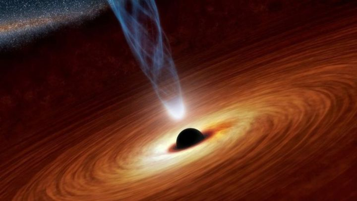

Un agujero negro es un objeto astronómico con una fuerza gravitatoria tan fuerte que nada, ni siquiera la luz, puede escapar de él.
Objetivo General:
Como objetivo principal de este proyecto es el aplicar el conocimiento adquirido durante este tiempo de estudio, diseñando una página web con todos los trabajos realizados con cambios en los temas, demostrando así el buen aprendizaje que el profesor dio durante los tiempos de clase.
Objetivo Especifico 1:
Realizar distintas paginas web con los temas seleccionados realizandolo de la mejor manera para un buen resultado final.
Objetivo Especifico 2:
Desarrollar de excelente manera los temas seleccionados para un buen entendimiento del tema, el buen diseño de las pagina web sin ningún fallo.
Los agujeros negros son los restos fríos de antiguas estrellas, tan densas que ninguna partícula material, ni siquiera la luz, es capaz de escapar a su poderosa fuerza gravitatoria. Mientras muchas estrellas acaban convertidas en enanas blancas o estrellas de neutrones, los agujeros negros representan la última fase en la evolución de enormes estrellas que fueron al menos de 10 a 15 veces más grandes que nuestro sol.
Un planeta extrasolar o exoplaneta es un planeta que orbita una estrella diferente al Sol y que, por lo tanto, no pertenece al sistema solar. Los planetas extrasolares se convirtieron en objeto de investigación científica en el siglo XX. Muchos astrónomos suponían su existencia, pero carecían de medios para identificarlos.
El término objeto volador no identificado, más conocido por el acrónimo ovni, nota se refiere a la observación de un objeto volador, real o aparente, que no puede ser identificado por el observador y cuyo origen sigue siendo desconocido después de una investigación.
El acrónimo fue creado para reemplazar al de «platillo volante», ya que a diferencia de este un ovni no tiene por qué ser necesariamente un objeto tecnológico o tripulado (puede ser también una estrella, un meteorito o un avión desconocido)